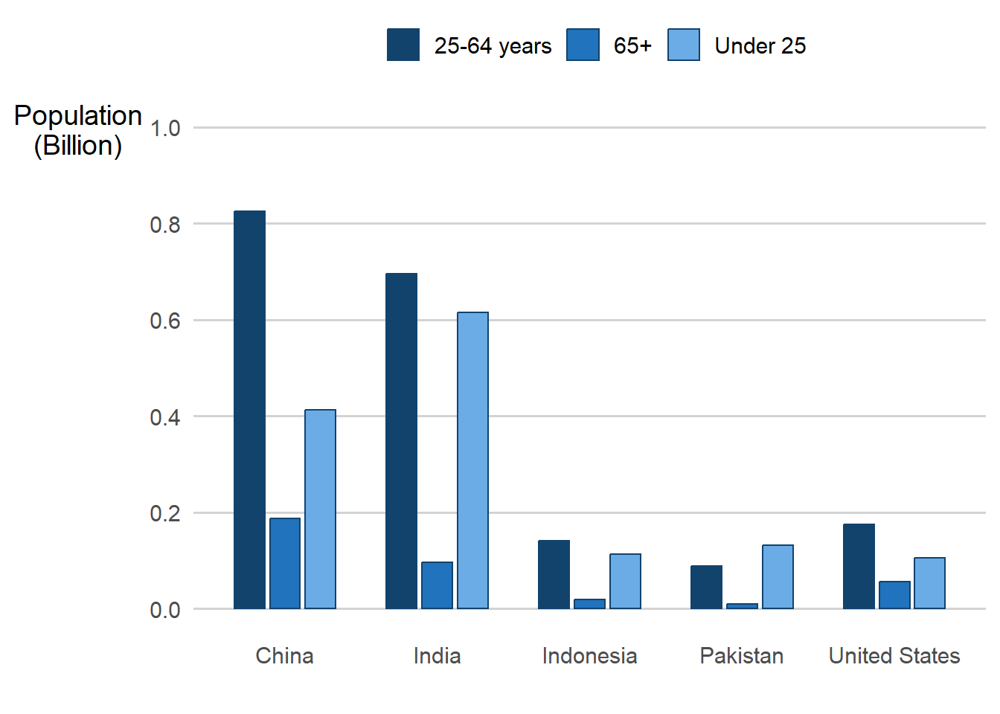
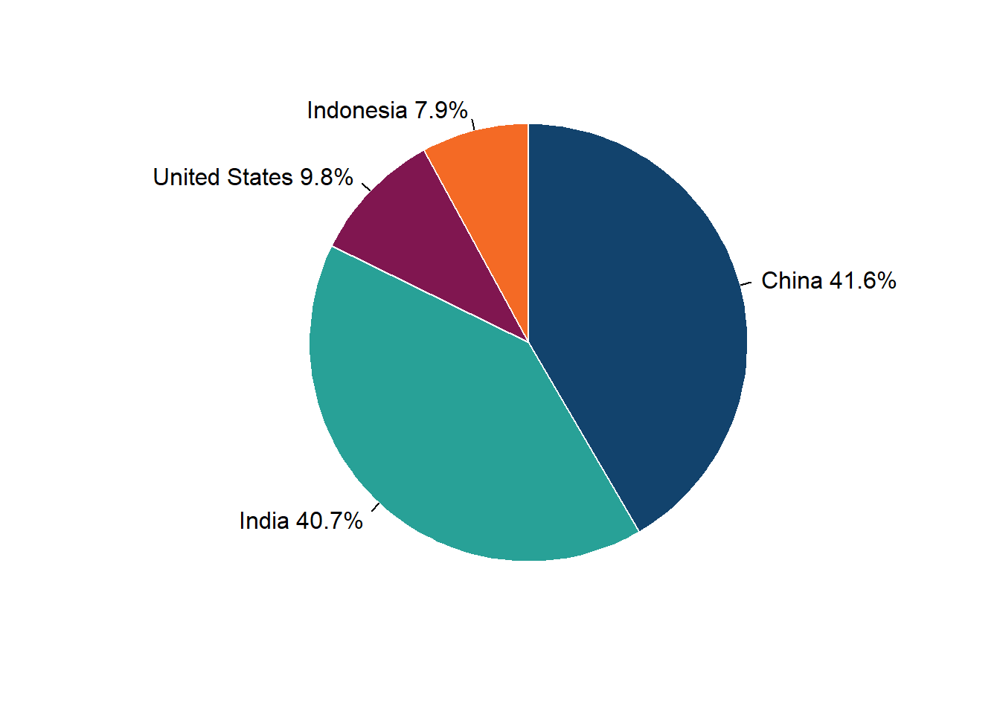

install.packages("afcolours")afcolours
This page contains the documentation for the R package of the Analysis Function’s colour palettes. The afcolours package aims to maintain the accessibility of graph outputs generated in R across the Analysis Function by simplifying the process by which users can access the standardised colour palettes.
Requirements
To run afcolours, your system requires the following installations:
- R
- The afcolours package
Installing afcolours
To install the latest version of afcolours, run:
How to obtain colours
In your R environment, import the afcolours package:
library("afcolours")The afcolours function takes three arguments: palette, colour_format, and n.
- palette is an optional parameter, chosen by the user based on the Analysis Function colour guidance. It takes one of four possible string values corresponding to the options:
- “categorical” (default)
- “duo”
- “focus”
- “sequential”
- colour_format is an optional parameter. It takes one of two possible string values:
- “hex” (default); meaning hexadecimal colour code, for example #12436D.
- “rgb”; meaning red green blue colour code, for example (18, 67, 109).
- n is an optional parameter for the categorical palette. It takes an integer value up to 6 (default n=6).
afcolours returns hex codes as a vector, and rgb codes as a matrix.
Basic examples
For example, to return the duo colour palette hex codes: ::: {.cell}
afcolours::af_colours("duo")[1] "#12436D" "#F46A25":::
To return a five colour categorical palette as rgb codes: ::: {.cell}
afcolours::af_colours("categorical", "rgb", 5) red green blue
[1,] 18 67 109
[2,] 40 161 151
[3,] 128 22 80
[4,] 244 106 37
[5,] 61 61 61:::
See also that a warning is given for colours lists greater than four to let the user know that for best practice, it is preferable to use a limit of four categories
Application
Duo
| Colour name | Hex code | RGB code | Colour fill |
|---|---|---|---|
| Dark blue | #12436D | (18, 67, 109) | |
| Orange | #F46A25 | (244, 106, 37) |
Figure 1: Line chart using the Duo colour palette
Code
#Load your packages
library(tidyverse)
library(ggplot2)
library(ggrepel)
# Load in your colours
af_duo_colours <- afcolours::af_colours("duo")
# Load in your data
world_population <- read_csv("data/world_population_in_billions.csv")
two_series_data <- world_population[1:2,] %>%
rename(Country = "Country/Territory") %>%
tidyr::gather(Year, Population, -Country) %>%
filter(Year %in% seq(1970, 2020, by=10))
# Create your chart
ggplot(two_series_data, aes(x = Year, y = Population,
colour = Country,
group = Country)) +
geom_line(size=1.1) +
scale_colour_manual(values=af_duo_colours, name=element_blank()) +
labs(x = "", y = "Population\n(Billion)") +
theme_classic(14) +
coord_cartesian(expand = FALSE, clip = 'off') +
theme(axis.title.y = element_text(angle = 0),
panel.grid.major.y = element_line("light grey"),
legend.position="top",
axis.line = element_line(FALSE),
axis.ticks = element_line("light grey"),
plot.margin = margin(0.5, 1.5, 0.1, 0.1, "cm"),
panel.grid.minor = element_blank(),
panel.grid.major.x = element_blank(),
panel.background = element_blank()
) +
scale_y_continuous(limits=c(0,1.5), n.breaks = 6)This line chart has two lines, one dark blue and one orange. This line chart uses data based on the world population dataset. Data is available with the afcolours package.
Focus
| Colour name | Hex code | RGB code | Colour fill |
|---|---|---|---|
| Dark blue | #12436D | (18, 67, 109) | |
| Grey | #BFBFBF | (191, 191, 191) |
Figure 2: Line chart using the Focus colour palette
Code
# Load your packages
library(tidyverse)
library(ggplot2)
library(hrbrthemes)
# Load in your colours
af_focus_colours <- afcolours::af_colours("focus")
# Load in your data
world_population <- read_csv("data/world_population_in_billions.csv")
focus_data <- world_population[1:5,] %>%
rename(Country = "Country/Territory") %>%
tidyr::gather(Year, Population, -Country) %>%
filter(Year %in% seq(1970, 2020, by=10)) %>%
mutate(highlight = ifelse(Country == "India", "India", "Other"))
# Create your chart
ggplot(focus_data, aes(x = Year, y = Population,
group = Country,
colour = highlight,
size = highlight)) +
geom_line(size=1) +
labs(x="Year", y="Population\n(Billion)") +
scale_colour_manual(values=af_focus_colours, name=element_blank()) +
theme_classic(14) +
coord_cartesian(expand = FALSE, clip = 'off') +
theme(axis.title.y = element_text(angle = 0),
panel.grid.major.y = element_line("light grey"),
legend.position="top",
axis.line = element_line(FALSE),
axis.ticks = element_line("light grey"),
plot.margin = margin(0.5, 1.5, 0.1, 0.1, "cm"),
panel.grid.minor = element_blank(),
panel.grid.major.x = element_blank(),
panel.background = element_blank()
) +
scale_y_continuous(limits=c(0,1.5), n.breaks = 6)
This line chart uses data based on the world population dataset. All lines are light grey, except the line showing the time series for India. Data is available with the afcolours package.
Sequential
| Colour name | Hex code | RGB code | Colour fill |
|---|---|---|---|
| Dark blue | #12436D | (18, 67, 109) | |
| Mid blue | #2073BC | (32, 115, 188) | |
| Light blue | #6BACE6 | (107, 172, 230) |
Figure 3: Bar chart using the Sequential colour palette
Code
# Load your packages
library(tidyverse)
library(ggplot2)
library(hrbrthemes)
# Load in your colours
af_sequential_colours <- afcolours::af_colours("sequential", colour_format = "rgb")
# Load in your data
world_population_by_age <- read_csv("data/population_by_age.csv")
top_five_age <- world_population_by_age[1:5,] %>%
tidyr::gather(Age, Population, -Country)
# Create your chart
ggplot(top_five_age, aes(x = Country, y = Population, fill = Age)) +
geom_col(width=0.6, position=position_dodge(0.7), stat="identity",
colour=rgb(af_sequential_colours, maxColorValue = 255)[1]) +
labs(x="", y="Population\n(Billion)") +
scale_fill_manual(values=rgb(af_sequential_colours, maxColorValue = 255),
name=element_blank()
) +
scale_y_continuous(limits=c(0,1), n.breaks = 6) +
theme_classic(14) +
theme(axis.title.y = element_text(angle = 0),
panel.grid.major.y = element_line("light grey"),
legend.position="top",
axis.line = element_line(FALSE),
axis.ticks = element_line(FALSE)
)
This clustered bar chart uses data based on the population by age dataset and shows data for five countries. The legend is presented in the same order as the bars in the clusters. Data is available with the afcolours package.
Distinct from previous examples, this section features how to use the rgb list returned by af_colours. It is generally easier to use hex codes, but this example is included for completeness. The end result is the same.
The spacing in this example is to account for the bar borders, which are required for accessibility purposes.
Categorical
| Colour name | Hex code | RGB code | Colour fill |
|---|---|---|---|
| Dark blue | #12436D | (18, 67, 109) | |
| Turquoise | #28A197 | (40, 161, 151) | |
| Dark pink | #801650 | (128, 22, 80) | |
| Orange | #F46A25 | (244, 106, 37) | |
| Dark grey | #3D3D3D | (61, 61, 61) | |
| Light purple | #A285D1 | (162, 133, 209) |
The following charts use data based on the world population dataset. Data is available with the af_colours package.
Figure 4: Bar chart using the Categorical colour palette
Code
# Load your packages
library(tidyverse)
library(ggplot2)
library(hrbrthemes)
# Load in your colours
af_categorical_colours <- afcolours::af_colours("categorical", colour_format = "hex", n = 6)
# Load in your data
world_population <- read_csv("data/world_population_in_billions.csv")
top_four_data <- world_population[1:4,] %>%
rename(Country = "Country/Territory") %>%
tidyr::gather(Year, Population, -Country) %>%
filter(Year %in% c(seq(1990, 2020, by=10)))
# Create your chart
ggplot(top_four_data, aes(x = Year, y = Population, fill = Country)) +
geom_col(width=0.6, position=position_dodge(0.7), stat="identity") +
labs(x="", y="Population\n(Billion)") +
scale_fill_manual(values = af_categorical_colours, name = "") +
ylim(0, 1.5) +
theme_classic(14) +
theme(axis.title.y = element_text(angle = 0),
panel.grid.major.y = element_line("light grey"),
legend.position="top",
axis.line = element_line(FALSE),
axis.ticks = element_line(FALSE),
)Figure 5: Pie chart using the Categorical colour palette
Code
# Load your packages
library(tidyverse)
library(ggplot2)
# Load in your colours
af_categorical_colours <- afcolours::af_colours("categorical", colour_format = "hex", n = 6)
# Load in your data
world_population <- read_csv("data/world_population_in_billions.csv")
top_four_data <- world_population[1:4,] %>%
rename(Country = "Country/Territory") %>%
tidyr::gather(Year, Population, -Country) %>%
filter(Year == 2020) %>%
arrange(-Population) %>%
mutate(Label = paste(Country,
paste0(round(Population/sum(Population)*100, 1), "%"),
sep=" "))
# Create your chart
pie(top_four_data$Population, labels = top_four_data$Label,
border="white", col=af_categorical_colours, radius = 1.05, clockwise = TRUE)
This a pie chart showing the proportional populations of the four most populous countries, China, India, the United States, and Indonesia.
Maintenance
The package uses the col2rgb function for generating the rgb color codes. In the event the Analysis Function colour palettes change, only the hex codes need be updated.